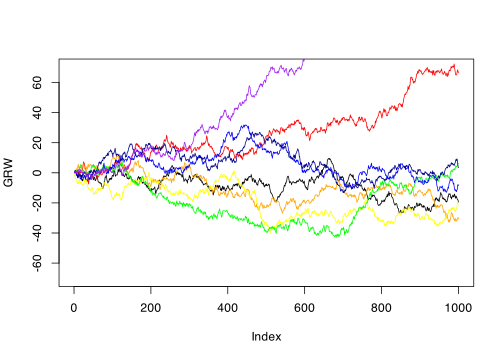

rgrw <- function(n, mean, sd) {
GRW <- rep(0, n)
GRW[1] <- 0
for (i in 1:(n - 1)) GRW[i + 1] <- GRW[i] + rnorm(1, mean, sd)
return(GRW)
}\[ \newcommand{\Exg}{\operatorname{\mathbb{E}}} \newcommand{\Ex}{\mathbb{E}} \newcommand{\Ind}{\mathbb{I}} \newcommand{\Var}{\operatorname{Var}} \newcommand{\Cov}{\operatorname{Cov}} \newcommand{\Corr}{\operatorname{Corr}} \newcommand{\ee}{\mathrm{e}} \]
20 Markov chains in continuous space
20.1 Markov chains with densities
In the last three lectures, we have looked at Markov chains and the Metropolis–Hastings algorithm on a discrete state space \(\mathcal S\). This allowed us to form Markov chain Monte Carlo (MCMC) estimators for discrete random variables. But very often we want to sample from continuous random variables. So in the next two lectures we will look at Markov chains and Metropolis–Hastings in continuous space. (We are still in discrete time, though.)
The general theory of Markov chains on continuous state spaces can get very complicated – there are lots of technical conditions, and you have to deal with a “measure theoretic” approach that looks at least as much like analysis from pure mathematics as it does probability and statistics. However, this technical material is not necessary to me able to understand and use the basic ideas of MCMC in continuous space. For this reason, we will often make broad simplifying assumptions, not get into the precise definitions of technical terms, and occasionally just outright lie. (If you want to get into more of the theoretical details, I recommend Subsection 2.3.2 and Sections 4.1 and 4.2 of Voss, An Introduction to Statistical Computing as a good place to begin your studies.)
The concept of a Markov chain and the Markov property remain the same: the next step \(X_{i+1}\) may depend on the current step \(X_i\), but, given the current step \(X_i\), may not depend any further on on the past steps \(X_{i-1}, X_{i-2}, \dots, X_2, X_1\). That is, \[ \mathbb P(X_{i+1} \in A \mid X_i = x_i, X_{i-1} = x_{i=1}, \dots, X_1 = x_1) = \mathbb P(X_{i+1} \in A \mid X_i = x_i)\] for all \(i = 1, 2, \dots\) and for all \(x_1, \dots, x_{i-1}, x_{i} \in \mathcal S\) and \(A \subset \mathcal S\) such that the conditional probability is defined.
Therefore, the steps of such a Markov chain will depend only on the initial state and the transition rule from moving from \(X_i = x\) to \(X_{i+1} \in A\). In general, we will need what is called a “transition kernel” \(p(x, A)\). However, we will make the simplification that the transition rule always has a density; that is, that there exists a conditional probability density function \(p\) where \(p(x, y)\) is the probability density of \(X_{i+1}\) around \(y\) given \(X_i = x\). Formally, we have \[ \mathbb P(X_{i+1} \in A \mid X_i = x) = \int_A p(x, y)\,\mathrm{d} y . \] This transition density \(p = p(x, y)\) behaves a lot like the transition probabilities \(\mathsf P = (p(x,y))\) in discrete space.
In the discrete case, we had \[\sum_{y \in \mathcal S} p(x, y) = 1 \qquad \text{for all } x\in \mathcal S \] (“rows of the transition matrix sum to 1”). Similarly, in the discrete case we have \[ \int_{\mathcal S} p(x, y) \,\mathrm{d}y = 1 \qquad \text{for all } x\in \mathcal S ,\] by the same argument that we have to go somewhere from \(x\).
20.2 Gaussian random walk
The most important Markov chain in continuous space is the following.
Example 20.1 Consider the Gaussian random walk with drift \(\mu\) and volatility \(\sigma\). This is a random walk with transitions given by the rule \(X_{i+1} = X_i + Z_i\), where the \(Z_i \sim \operatorname{N}(\mu, \sigma^2)\) are IID. So at each time step, the position of the random walk is shifted by a normally distributed amount. When \(\mu = 0\), we call this the symmetric Gaussian walk, since it moves up and down symmetrically. (The name “Gaussian random walk” is because the “Gaussian distribution” is alternative name for the normal distribution.) This can be used as the model of the price of a stock each day or (in higher dimensions) the position of a gas particle in a room.
Another way to write this is that \(X_{i+1} \sim \operatorname{N}(X_i + \mu, \sigma^2)\). So the transition density is \[ p(x, y) = \frac{1}{\sqrt{2\pi\sigma^2}}\, \exp \Bigg(- \frac{\big(y - (x + \mu)\big)^2}{2\sigma^2} \Bigg) . \]
We can simulate this in R in a similar way to the simple random walk on the integers.
You can play around with this function yourself, but generally we see similar behaviour to the simple random walk: for \(\mu > 0\) (as with \(p > \frac12\)) it trends fairly predictably upwards; for \(\mu < 0\) (as with \(p < \frac12\)) it trends fairly predictably downwards; and for \(\mu = 0\) (as with with \(p = \frac12\)) it is more unpredictable.
GRW <- rgrw(1000, 0, 1)
plot(GRW, col = "black", type = "l", ylim = c(-70, 70))
cols <- c("red", "orange", "yellow", "green", "blue", "darkblue", "purple")
for (i in 1:7) {
GRW <- rgrw(1000, 0, 1)
points(GRW, col = cols[i], type = "l")
}
20.3 Long-run behaviour
Most of the properties about long-run behaviour of Markov chains in discrete space continue to hold in continuous space: we just replace the transition probability by the transition density and sums by integrals.
We can find the two-step transition density \(p^{(2)}(x, y)\) be integrating over all possible intermediate steps \(z\) \[ p^{(2)}(x, y) = \int_{\mathcal S} p(x, z)\,p(z, y)\,\mathrm{d} z .\] Similarly, we get an \(n\)-step transition density from \[ p^{(n)}(x, y) = \int_{\mathcal S^{n-1}} p(x, z_1)\,p(z_1,z_2)\cdots p(z_{n-2},z_{n-1})\,p(z_{n-1}, y)\, \mathrm{d}z_1 \, \mathrm{d}z_2 \cdots \mathrm{d}z_{n-1} . \]
A stationary density \(\pi\) is a PDF on \(\mathcal S\) (so \(\pi(x) \geq 0\) and \(\int_{\mathcal S}\pi(x)\,\mathrm{d}x = 0\)) such that \[ \pi(y) = \int_{\mathcal S} \pi(x) \,p(x,y) \,\mathrm{d}x \qquad \text{for all } y \in \mathcal S . \] This is often easier to find by solving the detailed balance equations \[ \pi(y)\,p(y, x) = \pi(x)\,p(x, y) \qquad \text{for all } x,y \in \mathcal S . \]
[Limit theorem]
Next time. We will study the Metropolis–Hastings algorithm in continuous space.
Summary:
- Markov chains also exist for continuous state space, where they are defined by the transition density \(p(x, y)\).
- Properties are similar to Markov chains in discrete space: a stationary distribution can be found by solving the discrete balance equations \(\pi(x) p(x,y) = \pi(y) p(y,x)\); and the ergodic theorem says that \(\sum{1}{n} \sum_{i=1}^n \phi(X_i) = \operatorname{\mathbb E} \phi(X)\) where \(X\) has PDF \(\pi\).
Read more: Voss, An Introduction to Statistical Computing, Subsection 2.3.1.